Конференции «Антибактериальная терапия инфекций, развившихся в амбулаторных условиях» и «Рациональная антибиотикотерапия интраабдоминальных инфекций в хирургии, акушерстве и гинекологии»

23 сентября 2002 г. в Иркутске под эгидой МАКМАХ, Научно-методического центра Минздрава России по мониторингу антибиотикорезистентности (ЦМАР) и НИИ антимикробной химиотерапии (НИИАХ) Смоленской государственной медицинской академии (СГМА) на базе Байкал Бизнес Центра прошли две областные научно-практические конференции «Антибактериальная терапия инфекций, развившихся в амбулаторных условиях» и «Рациональная антибиотикотерапия интраабдоминальных инфекций в хирургии, акушерстве и гинекологии». Организаторами конференций выступили Комитет здравоохранения Иркутской области, Иркутский государственный медицинский университет (ИГМУ) и Государственный институт усовершенствования врачей. Конференции состоялись при поддержке фармацевтических компаний KRKA и Pfizer.
На конференции, посвященной терапии внебольничных инфекций с научными докладами выступили главный научный сотрудник университета Вероны, профессор Д. Корналиа, руководитель Сотрудничающего справочного и исследовательского центра ВОЗ по изучению стрептококков, профессор Э.Л. Каплан, главный научный сотрудник НИИ ревматологии РАМН, академик РАМН, профессор В.А. Насонова, директор НИИАХ СГМА, профессор Л.С. Страчунский, заместитель директора НИИАХ СГМА, доцент Р.С. Козлов, главный гастроэнтеролог Иркутской области И.Л. Петрунько и заведующий отделением гастроэнтерологии ГКБ N 1 г.Иркутска А.А. Рожанский. Обсуждались вопросы современного состояния антибиотикорезистентности внебольничных возбудителей и ее влияние на выбор антибиотиков, антибактериальная терапия инфекций верхних дыхательных путей и внебольничных пневмоний, значение ревматической лихорадки в современных условиях, вопросы эрадикации H.pylori, ошибки диагностики и лечения язвенной болезни.
На второй конференции выступили профессор Л.С. Страчунский и доцент Р.С. Козлов. Темы докладов были посвящены политике применения антибиотиков в стационарах, проблемам устойчивости основных возбудителей нозокомиальных инфекций к антибиотикам и современным подходам к лечению тяжелых инфекций в акушерстве, гинекологии и хирургии.
В заключение каждой из конференций состоялась дискуссия. Докладчики с удовольствием выслушали и ответили на вопросы аудитории.
Качество представленных докладов и актуальность затронутых тем вызвали широкий интерес среди практических врачей и бактериологов не только Иркутска и области, но и соседних регионов. В общей сложности в конференциях приняли участие более 500 человек.
Все зарегистрировавшиеся участники конференции получили изданное в 2002 г. при поддержке Фармакопеи США и Агентства США по международному развитию «Практическое руководство антиинфекционной химиотерапии».
Научно-практический семинар «Особенности выделения, идентификации и определения чувствительности пиогенных стрептококков»
На базе микробиологической лаборатории Иркутской государственной областной детской клинической больницы (ИГОДКБ), 23-26 сентября 2002 г. состоялся научно-практический семинар Минздрава России с международным участием «Особенности выделения, идентификации и определения чувствительности пиогенных стрептококков». Организаторами семинара выступили МАКМАХ и Сотрудничающий справочный и исследовательский центр ВОЗ по изучению стрептококков, Миннеаполис, США. Занятия на семинаре проводились руководителем Сотрудничающего центра ВОЗ профессором Э.Л. Капланом и доктором Д.Р. Джонсоном. Большую помощь в организации и проведении практической части семинара оказали доцент Р.С. Козлов, заведующая бактериологической лабораторией Смоленского областного центра госсанэпиднадзора О.И. Кречикова и секретарь МАКМАХ Д.В. Галкин. Семинар прошел при поддержке компаний bioMerieux, KRKA, Meiji Seika Kaisha и Федерации Европейских обществ по химиотерапии инфекций (FESCI).
На семинаре рассмотрели вопросы эпидемиологии и клинического значения стрептококковой инфекции в современных условиях, правила забора клинического материала для исследования и современные подходы к выделению пиогенных стрептококков, методы идентификации, серотипирования и особенности определения чувствительности пиогенных стрептококков.
В работе семинара приняли участие заведующие бактериологическими лабораториями и практические микробиологи из Иркутска, Красноярска, Тюмени, Томска, Новосибирска. Всего в работе семинара приняли участие 31 человек. Всем участникам семинара по завершении были вручены сертификаты участия.
Немаловажным итогом семинара является то, что проблемы и вопросы, освященные во время лекций и практических занятий, позволят улучшить диагностику и лечение стрептококковых инфекций в регионах Сибири, что, в свою очередь, будет способствовать снижению заболеваемости стрептококковыми инфекциями и ревматической лихорадкой.
Наряду с чтением лекций сотрудники НИИАХ провели обследование назофарингеального носительства пневмококков у детей в детских дошкольных учреждениях Иркутска.
Особую благодарность за проведение поездки и подготовку семинара выражаем главному детскому бактериологу Комитета здравоохранения администрации Иркутской области, зав. микробиологической лабораторией ИГОДКБ Е.Д. Агаповой, всему персоналу лаборатории, а также главному врачу ИГОДКБ В.М Селиверстову, ректору ИГМУ А.А. Майбороде и заведующему кафедрой микробиологии ИГМУ Р.В. Киборту.
Фотографии
(выберите рисунок для просмотра увеличенного изображения)
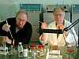 Профессор Э.Л. Каплан и д-р Д.Р. Джонсон в микробиологической лаборатории ИГОДКБ 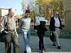 д-р Д.Р. Джонсон, доцент Р.С. Козлов, профессор Д. Корналиа и профессор Э.Л. Каплан во время экскурсии на Байкал 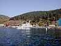 Байкал 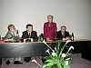 Профессор В.А. Насонова выступает с вступительным словом на открытии областной конференции «Антибактериальная терапия инфекций, развившихся в амбулаторных условиях» Конференц-зал Байкал Бизнес Центра Заведующая Е.Д. Агапова, профессор Л.С. Страчунский и доцент Р.С. Козлов в микробиологической лаборатории ИГОДКБ 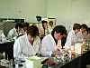 Во время практических занятий на семинаре 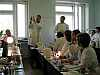 Лекцию на семинаре читает д-р Д.Р. Джонсон 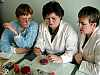 Постановка тестов на чувствительность 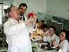 Обсуждение полученных результатов (профессор Э.Л. Каплан и доцент Р.С. Козлов) 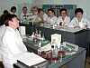 Во время лекции на семинаре 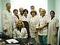 Персонал микробиологической лаборатории ИГОДКБ и преподавательский состав семинара 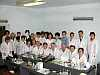 Участники семинара
{kind=link}
{kind=link}
{kind=link}
{kind=link}
{kind=link}
{kind=link}
{kind=link}
{kind=link}
{kind=link}
{kind=link}
{kind=link}
{kind=link}
{kind=link}